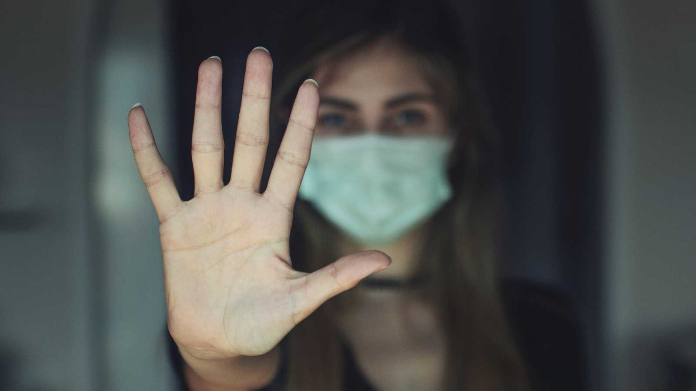

Violencia doméstica durante la COVID-19.
Durante la pandemia por la COVID-19, las mujeres están sufriendo un impacto desproporcionado de la inestabilidad económica, la presión extrema en los sistemas de salud y la interrupción profunda en la vida diaria. Asimismo, a nivel global, se ha reportado un aumento significativo de la violencia doméstica; las mujeres están atrapadas con sus abusadores y están aisladas de las personas y los recursos que mejor pueden ayudarlas. Antes de la pandemia, la violencia doméstica ya era una situación que experimentaba 1 de cada 3 mujeres en todo el mundo; eso significa que dentro del equipo de liderazgo y el personal de toda organización empresarial, es probable que en este momento haya mujeres que la estén sufriendo.
En un momento tan crítico para las mujeres, se necesitan acciones urgentes. Muchos empleadores, empleadoras y empresas están invirtiendo tiempo y recursos para apoyar al personal. Este documento desarrollado por ONU Mujeres proporciona consejos claros sobre las medidas clave que se pueden tomar en todos los niveles dentro de la las empresas y organizaciones, incluyendo a la alta dirección, área de comunicación, entre otras.
El problema.
Una de cada tres mujeres en el mundo sufre violencia sexual o física, en su mayoría, por parte de su pareja. La violencia contra las mujeres y las niñas constituye una violación de los derechos humanos.
Desde que se desató el brote de COVID-19, los nuevos datos e informes que presentan quienes están en primera línea revelan que se ha intensificado todo tipo de violencia contra las mujeres y las niñas, sobre todo, la violencia en el hogar.
Es la pandemia en la sombra que crece en medio de la crisis de la COVID-19 y necesitamos un esfuerzo colectivo general para detenerla.
Dado que los casos de COVID-19 siguen sobrecargando los servicios de salud, los servicios esenciales –como los refugios y las líneas de atención en los que se atiende a quienes padecen violencia en el hogar– han alcanzado el límite de su capacidad.
Es preciso redoblar los esfuerzos para que enfrentar la violencia contra las mujeres pase a ser una prioridad en las medidas de recuperación y respuesta a la COVID-19 en este sentido, sobre todas las personas recae una cuota de responsabilidad. ONU Mujeres brinda información actualizada y apoya los programas vitales para luchar contra la violencia hacia las mujeres que se ejerce a la sombra de la pandemia de COVID-19.